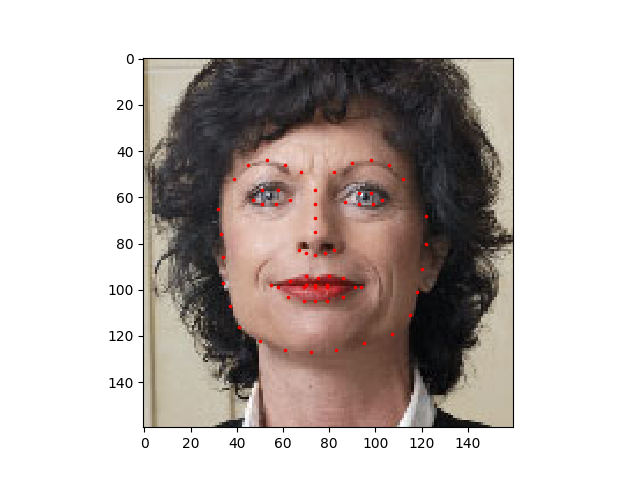
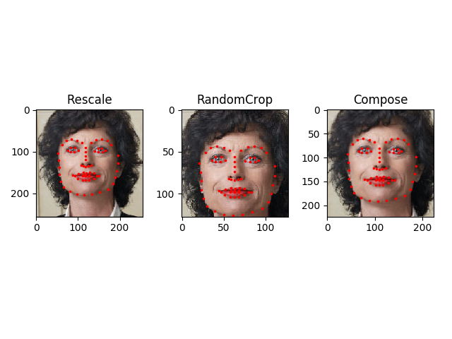
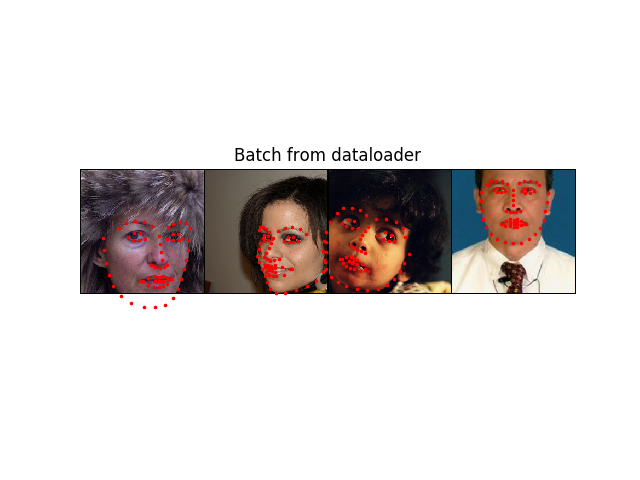

数据加载和处理教程
校验：宁采晨
解决任何机器学习问题都需要花费大量精力来准备数据。PyTorch提供了许多工具来简化数据加载过程，并有望使代码更具可读性。在本教程中，我们将学习如何从非平凡的数据集中加载和预处理/增强数据。
要能够运行本教程中的代码，请确保已安装以下软件包：
scikit-image：用于图像io和变换pandas：为了更方便地处理csv文件from __future__ import print_function, division import os import torch import pandas as pd from skimage import io, transform import numpy as np import matplotlib.pyplot as plt from torch.utils.data import Dataset, DataLoader from torchvision import transforms, utils # Ignore warnings import warnings warnings.filterwarnings("ignore") plt.ion() # interactive mode
我们要处理的数据集是面部姿势数据集。这意味着对脸部的标注如下：

总体上，每个面孔都标注了68个不同的界标点。
数据集包含一个带注释的csv文件，如下所示：
image_name,part_0_x,part_0_y,part_1_x,part_1_y,part_2_x, ... ,part_67_x,part_67_y
0805personali01.jpg,27,83,27,98, ... 84,134
1084239450_e76e00b7e7.jpg,70,236,71,257, ... ,128,312
让我们快速阅读CSV并获取（N，2）数组中的注释，其中N是特征点的数量。
landmarks_frame = pd.read_csv('data/faces/face_landmarks.csv')
n = 65
img_name = landmarks_frame.iloc[n, 0]
landmarks = landmarks_frame.iloc[n, 1:].as_matrix()
landmarks = landmarks.astype('float').reshape(-1, 2)
print('Image name: {}'.format(img_name))
print('Landmarks shape: {}'.format(landmarks.shape))
print('First 4 Landmarks: {}'.format(landmarks[:4]))
输出：
Image name: person-7.jpg
Landmarks shape: (68, 2)
First 4 Landmarks: [[32. 65.]
[33. 76.]
[34. 86.]
[34. 97.]]
让我们编写一个简单的辅助函数来显示图像及其特征点，并使用它来显示样例。
def show_landmarks(image, landmarks):
"""Show image with landmarks"""
plt.imshow(image)
plt.scatter(landmarks[:, 0], landmarks[:, 1], s=10, marker='.', c='r')
plt.pause(0.001) # pause a bit so that plots are updated
plt.figure()
show_landmarks(io.imread(os.path.join('data/faces/', img_name)),
landmarks)
plt.show()

数据集类
torch.utils.data.Dataset是表示数据集的抽象类。您的自定义数据集应继承Dataset，并覆盖下列方法：
__len__，使得len(dataset)返回数据集的大小。__getitem__支持索引，使得dataset[i]可以用来获取第i个样本
让我们为面部轮廓数据集创建一个数据集类。我们将在__init__中读取csv文件，在__getitem__中读取图像。由于所有图像不会立即存储在内存中，而是根据需要读取，因此可以提高内存效率。
我们的数据集中的样品是一个字典{'image': image, 'landmarks': landmarks}。我们的数据集将采取一个可选的参数transform，以便可以对样本进行任何必需的处理。我们将在下一节看到transform的用处。
class FaceLandmarksDataset(Dataset):
"""Face Landmarks dataset."""
def __init__(self, csv_file, root_dir, transform=None):
"""
Args:
csv_file (string): Path to the csv file with annotations.
root_dir (string): Directory with all the images.
transform (callable, optional): Optional transform to be applied
on a sample.
"""
self.landmarks_frame = pd.read_csv(csv_file)
self.root_dir = root_dir
self.transform = transform
def __len__(self):
return len(self.landmarks_frame)
def __getitem__(self, idx):
if torch.is_tensor(idx):
idx = idx.tolist()
img_name = os.path.join(self.root_dir,
self.landmarks_frame.iloc[idx, 0])
image = io.imread(img_name)
landmarks = self.landmarks_frame.iloc[idx, 1:]
landmarks = np.array([landmarks])
landmarks = landmarks.astype('float').reshape(-1, 2)
sample = {'image': image, 'landmarks': landmarks}
if self.transform:
sample = self.transform(sample)
return sample
让我们实例化该类并遍历数据样本。我们将打印前4个样本的大小并显示其特征点。
face_dataset = FaceLandmarksDataset(csv_file='data/faces/face_landmarks.csv',
root_dir='data/faces/')
fig = plt.figure()
for i in range(len(face_dataset)):
sample = face_dataset[i]
print(i, sample['image'].shape, sample['landmarks'].shape)
ax = plt.subplot(1, 4, i + 1)
plt.tight_layout()
ax.set_title('Sample #{}'.format(i))
ax.axis('off')
show_landmarks(**sample)
if i == 3:
plt.show()
break

输出：
0 (324, 215, 3) (68, 2)
1 (500, 333, 3) (68, 2)
2 (250, 258, 3) (68, 2)
3 (434, 290, 3) (68, 2)
转换（Transforms）
从上面可以看到的一个问题是样本的大小不同。大多数神经网络期望图像的大小固定。因此，我们将需要编写一些前置代码。让我们创建三个转换：：
Rescale：图像缩放RandomCrop：从图像中随机裁剪。这是数据扩充。ToTensor：将numpy格式的图片转换为torch格式的图片（我们需要换轴）。
我们将它们编写为可调用的类，而不是简单的函数，这样就不必每次调用转换时都传递其参数。为此，我们只需要实现__call__方法，如果需要的话，可以实现__init__方法。然后我们可以使用这样的转换：
tsfm = Transform(params)
transformed_sample = tsfm(sample)
在下面观察如何将这些变换同时应用于图像和特征点。
class Rescale(object):
"""Rescale the image in a sample to a given size.
Args:
output_size (tuple or int): Desired output size. If tuple, output is
matched to output_size. If int, smaller of image edges is matched
to output_size keeping aspect ratio the same.
"""
def __init__(self, output_size):
assert isinstance(output_size, (int, tuple))
self.output_size = output_size
def __call__(self, sample):
image, landmarks = sample['image'], sample['landmarks']
h, w = image.shape[:2]
if isinstance(self.output_size, int):
if h > w:
new_h, new_w = self.output_size * h / w, self.output_size
else:
new_h, new_w = self.output_size, self.output_size * w / h
else:
new_h, new_w = self.output_size
new_h, new_w = int(new_h), int(new_w)
img = transform.resize(image, (new_h, new_w))
# h and w are swapped for landmarks because for images,
# x and y axes are axis 1 and 0 respectively
landmarks = landmarks * [new_w / w, new_h / h]
return {'image': img, 'landmarks': landmarks}
class RandomCrop(object):
"""Crop randomly the image in a sample.
Args:
output_size (tuple or int): Desired output size. If int, square crop
is made.
"""
def __init__(self, output_size):
assert isinstance(output_size, (int, tuple))
if isinstance(output_size, int):
self.output_size = (output_size, output_size)
else:
assert len(output_size) == 2
self.output_size = output_size
def __call__(self, sample):
image, landmarks = sample['image'], sample['landmarks']
h, w = image.shape[:2]
new_h, new_w = self.output_size
top = np.random.randint(0, h - new_h)
left = np.random.randint(0, w - new_w)
image = image[top: top + new_h,
left: left + new_w]
landmarks = landmarks - [left, top]
return {'image': image, 'landmarks': landmarks}
class ToTensor(object):
"""Convert ndarrays in sample to Tensors."""
def __call__(self, sample):
image, landmarks = sample['image'], sample['landmarks']
# swap color axis because
# numpy image: H x W x C
# torch image: C X H X W
image = image.transpose((2, 0, 1))
return {'image': torch.from_numpy(image),
'landmarks': torch.from_numpy(landmarks)}
组合转换（Compose transforms）
现在，我们将转换应用于样本。
假设我们要将图像的较短边重新缩放为256，然后从中随机裁剪一个尺寸为224的正方形。即我们要组成 Rescale和RandomCrop变换。 torchvision.transforms.Compose是一个简单的可调用类，它使我们可以执行此操作。
scale = Rescale(256)
crop = RandomCrop(128)
composed = transforms.Compose([Rescale(256),
RandomCrop(224)])
# Apply each of the above transforms on sample.
fig = plt.figure()
sample = face_dataset[65]
for i, tsfrm in enumerate([scale, crop, composed]):
transformed_sample = tsfrm(sample)
ax = plt.subplot(1, 3, i + 1)
plt.tight_layout()
ax.set_title(type(tsfrm).__name__)
show_landmarks(**transformed_sample)
plt.show()

遍历数据集
让我们将所有这些放在一起以创建具有组合转换的数据集。总而言之，每次采样此数据集时：
- 从文件中即时读取图像
- 将变换应用于读取的图像
- 由于其中一种转换是随机的，因此在采样时会增加数据
我们可以像之前一样通过一个for i in range循环遍历创建的数据集。
transformed_dataset = FaceLandmarksDataset(csv_file='data/faces/face_landmarks.csv',
root_dir='data/faces/',
transform=transforms.Compose([
Rescale(256),
RandomCrop(224),
ToTensor()
]))
for i in range(len(transformed_dataset)):
sample = transformed_dataset[i]
print(i, sample['image'].size(), sample['landmarks'].size())
if i == 3:
break
输出:
0 torch.Size([3, 224, 224]) torch.Size([68, 2])
1 torch.Size([3, 224, 224]) torch.Size([68, 2])
2 torch.Size([3, 224, 224]) torch.Size([68, 2])
3 torch.Size([3, 224, 224]) torch.Size([68, 2])
但是，通过使用简单的for循环迭代数据，我们失去了很多功能。特别是，我们错过了：
- 批量处理数据
- 整理数据
- 使用
multiprocessing并行加载数据。
torch.utils.data.DataLoader是提供所有这些功能的迭代器。下面使用的参数应该清楚。一个重要参数是collate_fn。您可以使用指定要精确批处理样品的数量collate_fn。但是，默认排序规则在大多数情况下都可以正常工作。
dataloader = DataLoader(transformed_dataset, batch_size=4,
shuffle=True, num_workers=4)
# Helper function to show a batch
def show_landmarks_batch(sample_batched):
"""Show image with landmarks for a batch of samples."""
images_batch, landmarks_batch = \
sample_batched['image'], sample_batched['landmarks']
batch_size = len(images_batch)
im_size = images_batch.size(2)
grid_border_size = 2
grid = utils.make_grid(images_batch)
plt.imshow(grid.numpy().transpose((1, 2, 0)))
for i in range(batch_size):
plt.scatter(landmarks_batch[i, :, 0].numpy() + i * im_size + (i + 1) * grid_border_size,
landmarks_batch[i, :, 1].numpy() + grid_border_size,
s=10, marker='.', c='r')
plt.title('Batch from dataloader')
for i_batch, sample_batched in enumerate(dataloader):
print(i_batch, sample_batched['image'].size(),
sample_batched['landmarks'].size())
# observe 4th batch and stop.
if i_batch == 3:
plt.figure()
show_landmarks_batch(sample_batched)
plt.axis('off')
plt.ioff()
plt.show()
break

输出：
0 torch.Size([4, 3, 224, 224]) torch.Size([4, 68, 2])
1 torch.Size([4, 3, 224, 224]) torch.Size([4, 68, 2])
2 torch.Size([4, 3, 224, 224]) torch.Size([4, 68, 2])
3 torch.Size([4, 3, 224, 224]) torch.Size([4, 68, 2])
后记：torchvision
在本教程中，我们已经看到了如何构造和使用数据集，转换数据和的数据加载。torchvision软件包提供了一些常见的数据集和转换。您甚至不必编写自定义类。torchvision中可用的更通用的数据集之一是ImageFolder。假定图像的组织方式如下：
root/ants/xxx.png
root/ants/xxy.jpeg
root/ants/xxz.png
.
.
.
root/bees/123.jpg
root/bees/nsdf3.png
root/bees/asd932_.png
其中“ants”，“bees”等是类标签。同样也可以使用PIL.Image中的操作像 RandomHorizontalFlip和Scale来进行通用转换。您可以使用以下代码创建一个数据加载器：
import torch
from torchvision import transforms, datasets
data_transform = transforms.Compose([
transforms.RandomSizedCrop(224),
transforms.RandomHorizontalFlip(),
transforms.ToTensor(),
transforms.Normalize(mean=[0.485, 0.456, 0.406],
std=[0.229, 0.224, 0.225])
])
hymenoptera_dataset = datasets.ImageFolder(root='hymenoptera_data/train',
transform=data_transform)
dataset_loader = torch.utils.data.DataLoader(hymenoptera_dataset,
batch_size=4, shuffle=True,
num_workers=4)
对于训练代码示例，请参见迁移学习教程
脚本的总运行时间： （0分钟59.213秒）
下载python文件: data_loading_tutorial.py
下载 Jupyter notebook文件: data_loading_tutorial.ipynb